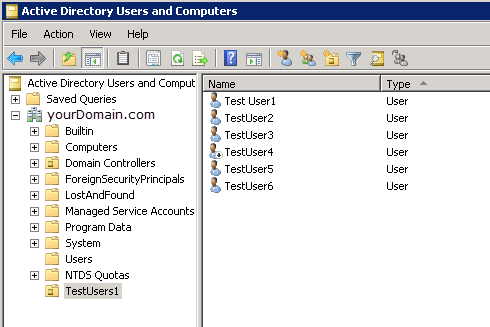
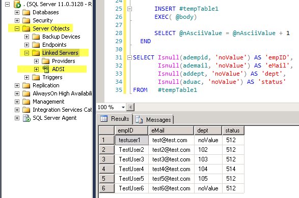

Problem: Need to query all Active Directory users from Linked Server in SQL Sever but number of user objects is over 900.
Situation: If a query from a SQL Server Linked Server returns more than 900 records the query will result in an error. This is a built-in limitation of the Active Directory Linked Server Provider.
Overall Design: Structure SQL query to loop through each letter of the alphabet and store results in a temporary table. This will allow you to get a maximum of 900 users per letter. This should work in most cases, except for very large organizations.
Active Directory Users:
In this example there are only 6 users but there could be thousands of users. They are all in the "TestUsers1" Organizational Unit (OU).

Linked Server and SQL Query results:
The userAccountControl values can be confusing,
here is an article laying out what each number means.

SQL Code:
LDAPqueryGetAllUsers.sql
Overall what this query does is: (A) create a temp table, (B) loop through all the letters of the alphabet, (C) in the loop it issues OPENQUERY to the TestUsers1 OU where the samaccountname starts with the given letter the loop is on, (D) the results are inserted to the temp table, (E) when the loop is complete it calls a SELECT on the temp table to display all of the records.
There are 26 letters in the English alphabet and you could get 900 users per letter that means, potentially, you could return 23,400 users in one OPENQUERY. However this maximum number is unlikely, as it is the case that user's name's beginning letter are not spread out evenly across the alphabet.